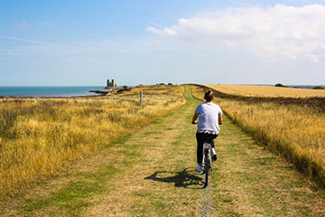

Bike Tours
For a change of pace and a fun way to get to know the area, try exploring Bozeman, Montana and the surrounding area on a bike.
Cycle the Divide - Montana

Space still available
Sample our heralded Great Divide Mountain Bike Route, fully supported and load free! We’ll travel from the lively resort town of Whitefish, located near Glacier National Park, to the southern end of the spectacular Swan Range, one of Montana’s less-visited geologic gems. Not far away lies Flathead Lake, the largest natural freshwater lake in the West.
Riding mostly on U.S. Forest Service roads and a bit of singletrack, we’ll experience the high country of one of the world’s great wildland complexes. Along the way, we’ll encounter a variety of flora and fauna — the sharp-eyed might even spot wild huckleberries ripe for the picking or the occasional bear on a distant hillside. We’ll skirt the southern boundaries of the Bob Marshall and Scapegoat wilderness areas and crest the Continental Divide on a loop near Lincoln, our ultimate destination.
| Details for the Cycle the Divide | |
|---|---|
| Length | 7 day |
| Skill Level | Moderater |
| Cost | $899.99 |
| Location | Whitefish, MT |
Family Fun

Reveal your inner kid! A cycling vacation can be one of the best bonding activities that family members can experience. Family fun tours can include all the amenities offered on our fully supported-trips, or you can explore self-contained family touring! Every family fun trip offers opportunities for off-bike access to historical sites, hiking trails, special events, and, of course, ice cream! It’s incredible to see the bonding among families and the youth on these events. Join us for the best kind of family getaway — a family bike tour!
Please note: In order to participate in our Family Fun tours, adults must be accompanied by a child and children must be accompanied by an adult.
| Details for Family Fun Event | |
|---|---|
| Length | 3 day |
| Skill Level | Beginner |
| Cost | $350 |
| Location | Montana Train Trails |